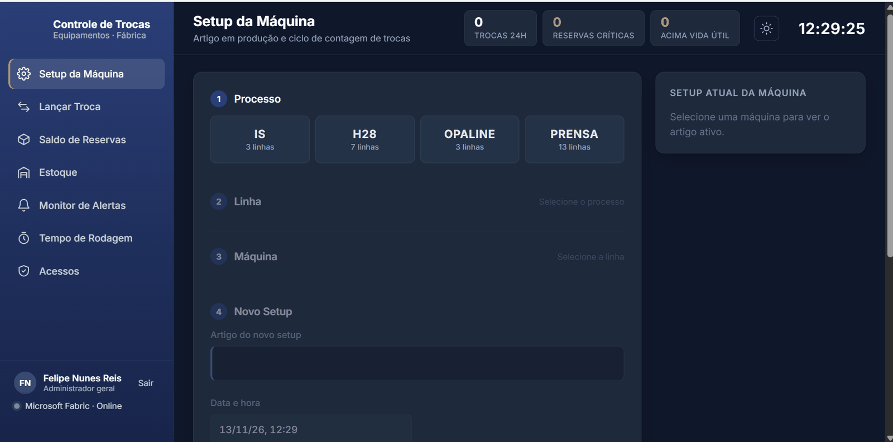
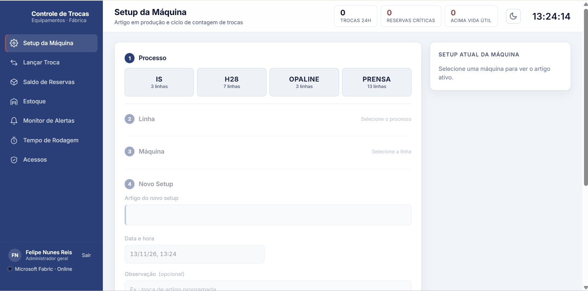
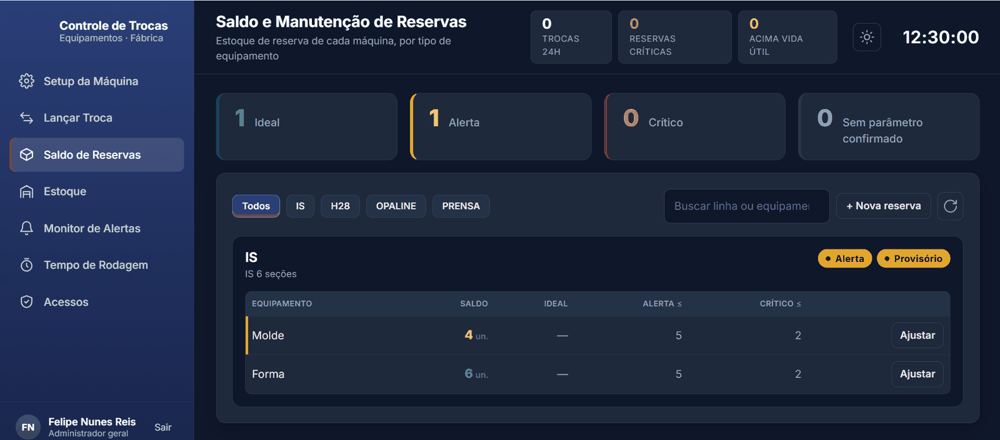
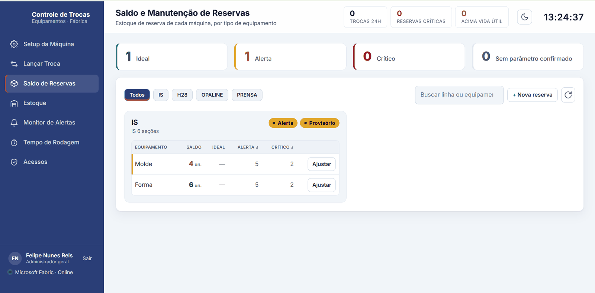
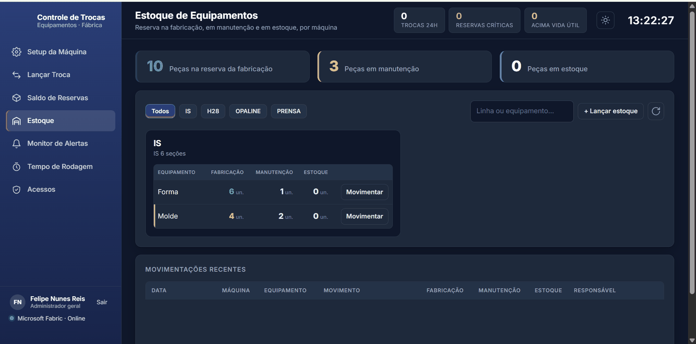
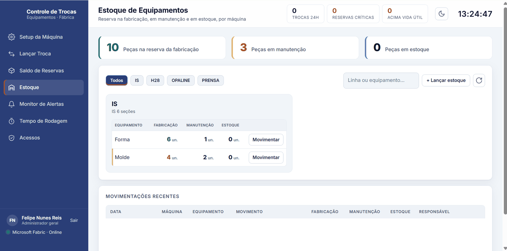
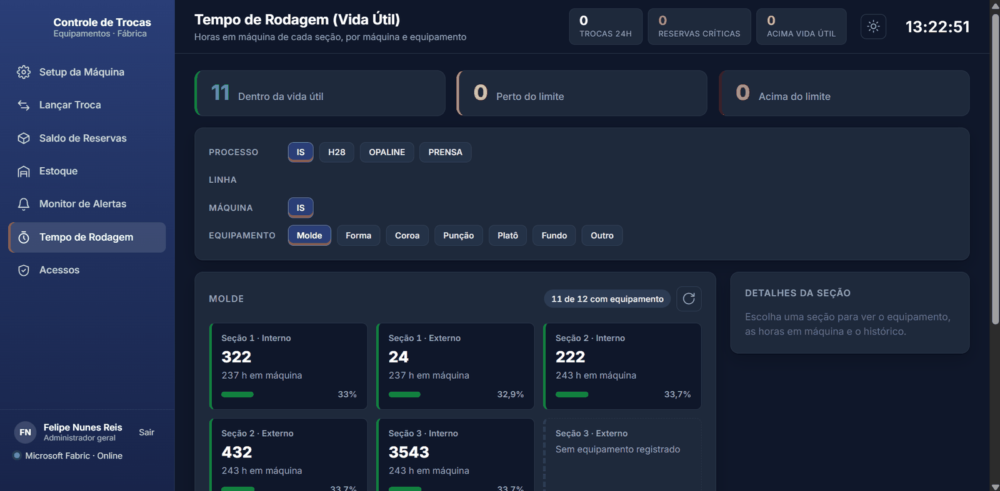
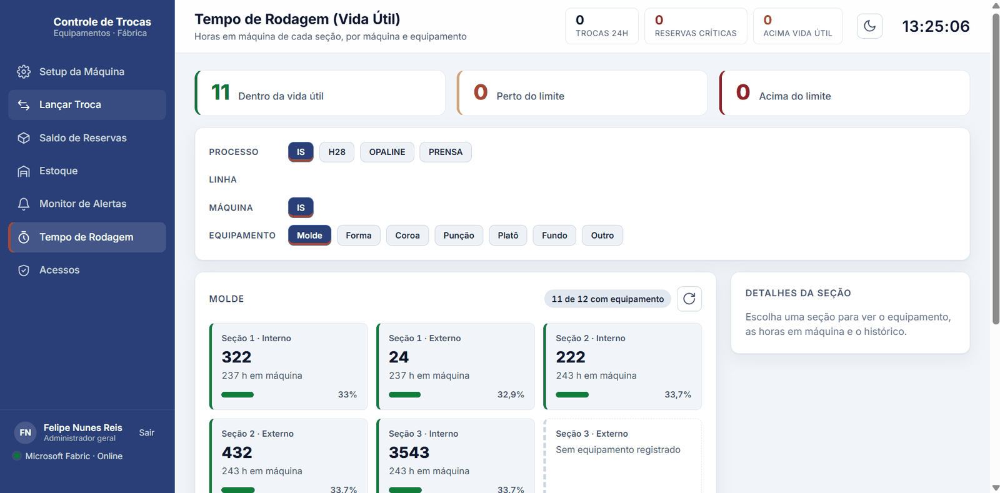

Overview
Forming machines in a glass plant run with dozens of interchangeable parts: molds, blanks, crowns, plungers, neck rings, chucks, burners and more, one per section and sometimes one per side. This application gives the factory a single record of what is installed where, which article is in production, how many spare parts are in reserve, how long each part has run, and where every part is in its lifecycle (reserve, machine, maintenance, stock). It covers the IS, H-28/Burn-Off, Opaline and Press lines: 4 processes and 26 parameterized production lines.
The back end is a Flask REST API that also serves the front end. Data lives in a Microsoft Fabric Lakehouse (Delta Tables), where it is also available to Power BI. Users sign in with their Microsoft account and only see the processes and lines they are allowed to.
Context and problem
Before this system, changeovers, the article in production and the balance of reserve parts had no centralized record. It was hard to know what was in each position of a machine, how long a piece of equipment had been running, and when a reserve had become critical. Production and mold maintenance each kept their own view of the same parts.
My role
I designed and built the whole system: the data model in the Lakehouse, the Flask API and its security, the front end and its design system, the Fabric integration, the deployment on a Windows server, the automated tests and the end-to-end browser tests. Development was iterative and guided by real use on the factory floor.
By the numbers
- ~9,600lines of code (Python, JS, HTML, CSS, SQL, PowerShell)
- 7screens
- 8Lakehouse tables
- 4production processes
- 26production lines parameterized
- 91automated tests
- ~0.03 sscreen refresh after the read cache (was 3.6–5.3 s)
Architecture
Three layers, with the back end as the only point of access to the data. The browser never talks to Fabric directly.
A changeover, step by step
- Operator selects process → line → machine → section → equipment → position. The front end uses the parameters served by the API, and what is currently installed in that position, to pre-fill the equipment being removed.
- POST to the changeovers endpoint. The back end validates the input against the central parameters, checks the user's role for that line, and applies the rules: an active setup must exist, a part must be in the position, the installed number must not already be in a machine, and repeated IDs are resolved.
- One operation writes everything: the changeover linked to the active setup, any new equipment in the registry, −1 part in reserve and +1 in maintenance (with a stock-history row), the run-time cycle closed for the removed part and opened for the installed part.
- Reads come before any write, so nothing is ever recorded halfway.
- The alert monitor picks the changeover up on its next poll and shows it full screen.
Equipment lifecycle
Every part moves through the same cycle, and every move is a row in an auditable history. A changeover automatically takes one part out of reserve and sends the removed part to maintenance; the maintenance role completes repairs, returns parts to manufacturing and makes inventory adjustments, with a mandatory reason.
Key features
Screenshots follow the site theme: switch between dark and light in the header to see both versions of the app. Line numbers, article codes and records are blanked.
Machine setup
Records the article in production, starts a changeover-count cycle and closes the previous one. A grid shows the equipment in every position (section × equipment × inner/outer part), compares it with the last setup and flags divergences and repeated numbers.


Log a changeover
Cascading selectors (process → line → machine → section → equipment → position). The removed equipment is filled in automatically from what is registered in that position. The changeover is blocked when the machine has no active setup. A summary panel shows what will be saved, and the latest entries appear below it.


Implicit equipment registry
Each part has its own ID; the physical number stamped on it can repeat. New numbers are registered automatically when first used; repeated numbers prompt the operator to choose which part they mean. The registry has no screen of its own: it works inside the changeover and setup screens.
Reserve stock
One card per machine with the reserve of each equipment type, classified as Ideal, Alert, Critical or No parameter according to central parameters per machine model. Counting is in parts; H-28 molds are controlled in pairs and accept half a pair.


Inventory: manufacturing and maintenance together
Parts in reserve, in maintenance and in stock, per machine. A changeover automatically debits the reserve and sends the removed part to maintenance. The Maintenance role completes repairs, sends parts back to manufacturing and makes inventory adjustments with a mandatory reason. Every movement goes to an auditable history.


Alert monitor
Cards of changeovers in near real time, refreshed every minute. Each new changeover appears full screen, for a monitor on the factory floor, with optional sound.


Run time and useful life
Hours in machine for each section, compared with the reference useful life: within useful life, near the limit from 80%, or above the limit, with history per position.


Access control and header indicators
Corporate Microsoft sign-in and access granted per process and line with four roles: Viewer, Operator, Maintenance and Administrator, managed inside the application. The header on every screen shows changeovers in the last 24 h, critical reserves and equipment above useful life. Light/dark theme and a responsive layout for desktop, tablet and phone.
Technical highlights
Snippets are simplified and use generic names.
Repository pattern: SQLite ↔ Fabric by environment variable
All business rules (recording a changeover, balances, run-time cycles, useful-life status) live in a base repository. Two implementations provide storage: SQLite for development and demos, Fabric for production. Switching is one environment variable, and no rule changes.
class BaseRepository(ABC):
# business rules, shared
def record_changeover(self, data, now=None): ...
def start_setup(self, data, now=None): ...
@abstractmethod
def _append(self, table, rows): ...
@abstractmethod
def _query(self, sql, params=()): ...
class SqliteRepository(BaseRepository): ... # local file, same rules
class FabricRepository(BaseRepository): ... # Delta Tables on OneLake
def get_repository():
return FabricRepository() if DATA_BACKEND == "fabric" else SqliteRepository()Delta read cache: a round of screens from 3.6–5.3 s to about 0.03 s
Reading Delta Tables over the network on every request was the bottleneck. The Fabric repository keeps a per-table cache with a configurable TTL, shared between open screens, refreshed incrementally from the Delta table and invalidated on every write. A full round of the screens dropped from 3.6–5.3 seconds to roughly 0.03 seconds.
Writing where the SQL endpoint cannot
The Lakehouse SQL analytics endpoint is read-only. Writes go straight to the Delta Tables on OneLake with deltalake (delta-rs) and PyArrow, with the table protocol pinned so the Rust writer stays compatible. Reads can use either the Delta Tables (cached) or the SQL endpoint through pyodbc with a Service Principal token.
Additive, idempotent schema migration
A migration tool reports what it would change before applying, only adds columns and tables (never drops data), and can be re-run safely. It also back-filled the stock history from changeovers recorded before the inventory module existed.
Equipment identity by ID, not by stamped number
Physical numbers repeat across parts and even within the same type. Every part gets a UUID, and changeovers, setups and run-time cycles reference the ID. The number stays as a human label; ambiguity is resolved by asking the operator.
Central parameters in one file
Processes, lines, machine types, sections, equipment positions, useful life and reserve thresholds are defined once in config and served to the front end. Reserve rules vary by machine model (H-28 with 12 or 18 sections), and processes without confirmed parameters are marked as provisional instead of guessing.
Security
Sign-in with Microsoft Entra ID (OpenID Connect, authorization code with PKCE) through MSAL on the server. The session is a signed, HttpOnly, SameSite=Lax cookie, Secure under HTTPS. Secrets live only in environment variables, outside the deployment package. Authorization is checked on the server on every route; the API even trims the parameter list so the UI only offers lines the user may see. Everything displayed in the front end is escaped. Roles separate duties (Operator ≠ Maintenance), and Row-Level Security on the Fabric SQL endpoint applies the same permission table to Power BI and SQL users.
def permits(user, process, line=None, role="VIEWER"):
return any(
role_satisfies(scope.role, role)
and scope.process in (process, "*")
and (line is None or scope.line in (line, "*"))
for scope in user.scopes
)
@app.post("/api/changeovers")
def create_changeover():
data = validate_changeover(request.json) # against central parameters
current_user().require(data.process, data.line, "OPERATOR")
return jsonify(repo.record_changeover(data))Challenges and how I solved them
Challenge
Every screen read several Delta Tables over the network; a round of screens took 3.6–5.3 s.
Solution
A per-table read cache with TTL, incremental refresh and invalidation on write. The same round now takes about 0.03 s.
Challenge
The Fabric SQL endpoint is read-only, so the app could not write through SQL.
Solution
Writes go to the Delta Tables on OneLake with deltalake and PyArrow; reads use cached Delta or the SQL endpoint.
Challenge
The model evolved while real data was already in the Lakehouse.
Solution
An additive, idempotent migration tool that reports before applying and never deletes data, including retroactive stock accounting.
Challenge
Stamped equipment numbers repeat, so "mold 22" could mean two different parts.
Solution
Identity by UUID with an implicit registry: new numbers are registered automatically, repeated ones ask the operator to choose.
Challenge
Reserve rules differ by machine model and some processes had no agreed parameters yet.
Solution
Central parameters per model, counting in parts (pairs for H-28 molds, half pairs accepted), and an explicit "no parameter" status instead of silent defaults.
Challenge
Production and maintenance tracked the same parts separately.
Solution
One lifecycle (reserve → machine → maintenance → stock → reserve) with automatic moves on changeover, a Maintenance role for the rest, and a full movement history.
Challenge
Developing and testing without a Fabric connection.
Solution
The SQLite repository with the same interface, plus tests of the Fabric repository against local Delta Tables.
Development process
Iterative, guided by real use on the factory floor. Each step was validated with automated tests and browser-based interface tests. Alongside the application I ran the server's infrastructure diagnosis (CPU/WMI) and the hardware sizing.
Setup and changeovers
Core model: machine setups and changeover entries.
Equipment identity by ID
Implicit registry; stamped numbers become labels.
Reserve per machine with central parameters
Status thresholds by machine model.
Corporate sign-in and access control
Entra ID, roles per process and line, managed in the app.
Fabric integration
Fabric repository: Delta writes, SQL endpoint reads, RLS scripts.
Server deployment with HTTPS
PowerShell installer: prerequisites, virtual environment, certificate from the Windows store, scheduled task, health check.
Performance
Per-table read cache (3.6–5.3 s → ~0.03 s).
Manufacturing and maintenance integration
Inventory module and stock movement history.
Visual refinement
Cards, light/dark theme, full-screen alerts.
Results
- A single, centralized record of changeovers, the article in production and reserve balances, where there was none.
- The factory can see what is in each machine position, how long each part has run, and which reserves are critical.
- Production and maintenance share one lifecycle for parts, with an auditable movement history.
- Data lands in the Lakehouse and is ready for Power BI, with row-level security.
- 91 automated tests and end-to-end browser tests back every change.
Tools
Back end
- Python 3.12
- Flask (REST API, also serves the front end)
- Waitress
- Cheroot (HTTPS in-app)
Front end
- HTML5
- CSS3 (design tokens, light/dark)
- JavaScript ES modules
- Inter
Identity and data
- Microsoft Entra ID (OIDC + PKCE, MSAL)
- Microsoft Fabric Lakehouse
- Delta Tables (deltalake / delta-rs, PyArrow)
- SQL analytics endpoint (pyodbc, ODBC Driver 18)
- azure-identity (Service Principal)
- Row-Level Security
- SQLite (dev / demo)
- Power BI
Delivery and quality
- PowerShell installer (Windows Server)
- Scheduled task + health check
- unittest (91 tests)
- Playwright E2E (Microsoft Edge)